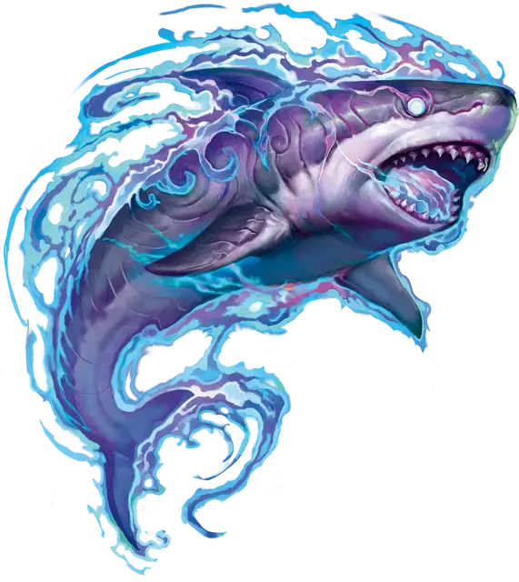

Морской зверь
Beast of the Sea
Средний Зверь, без мировоззрения

Класс Доспеха 13 + бонус мастерства (природный доспех)
Хиты 5 + пятикратный уровень следопыта (количество костей хитов (к8) зверя равно вашему уровню следопыта)
Скорость 5 футов, плавая 60 футов
| мод | спас | ||
|---|---|---|---|
| СИЛ | 14 | +2 | +2 |
| ЛОВ | 14 | +2 | +2 |
| ТЕЛ | 15 | +2 | +2 |
| мод | спас | ||
|---|---|---|---|
| ИНТ | 8 | −1 | −1 |
| МДР | 14 | +2 | +2 |
| ХАР | 11 | +0 | +0 |
Чувства тёмное зрение 60 футов, пассивное Восприятие 12
Языки понимает языки, на которых вы говорите
Опасность —
Особенности
Амфибия. Зверь может дышать и воздухом, и под водой.
Первичная связь. Вы можете добавить свой бонус мастерства к любой проверке характеристик или спасброску, которые совершает зверь.
Действия
Опутывающий удар. Рукопашная атака оружием: ваш модификатор броска атаки заклинанием к попаданию, досягаемость 5 футов, одна цель. Попадание: 1к6 + 2 + БМ колющего или дробящего урона (по вашему выбору), и цель схвачена (Сл высвобождения равна Сл спасброска ваших заклинаний). Пока этот захват не окончится, зверь не сможет использовать эту атаку по другой цели.
Описание
См. архетип следопыта «повелитель зверей».